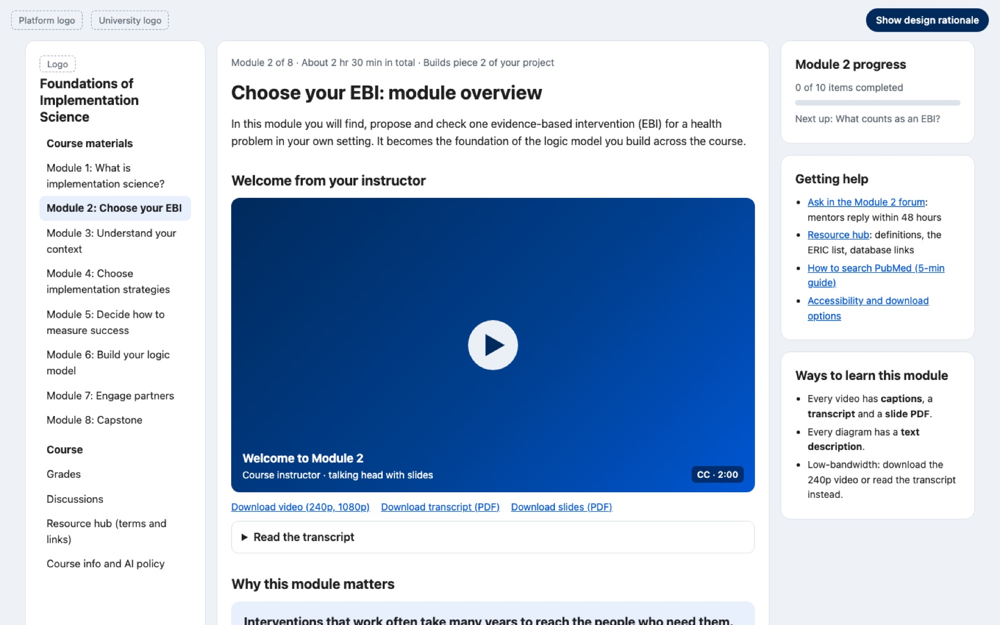
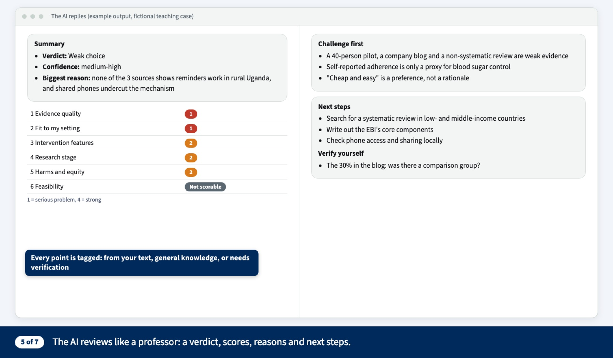
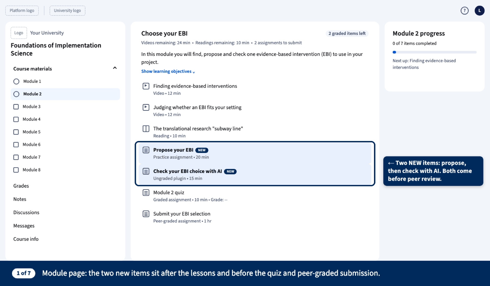
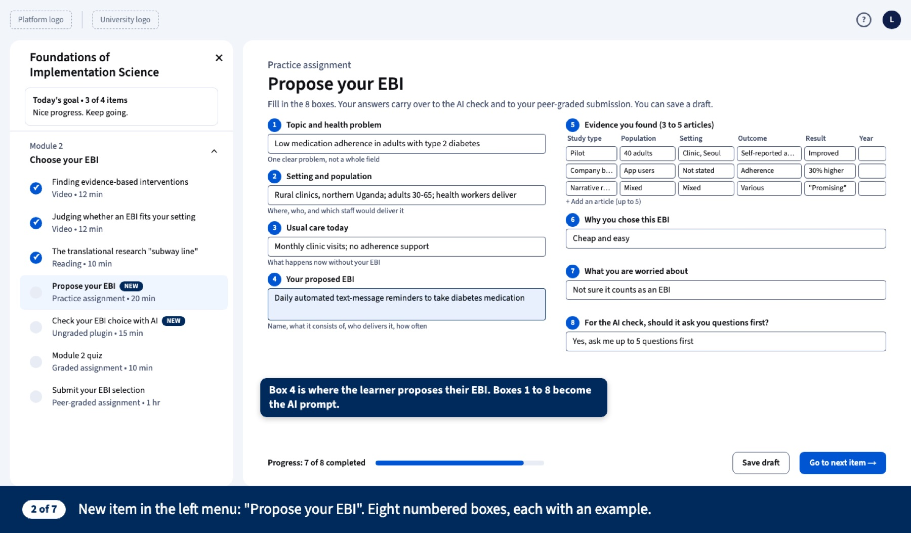
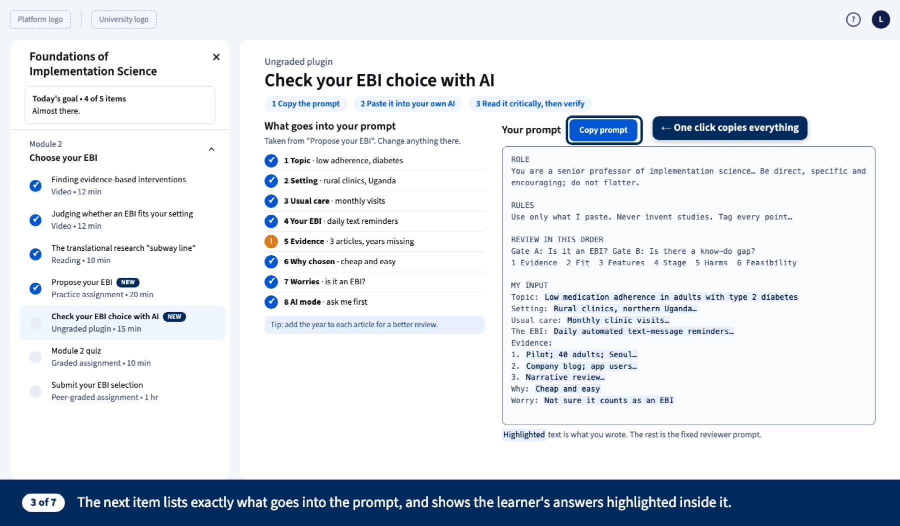
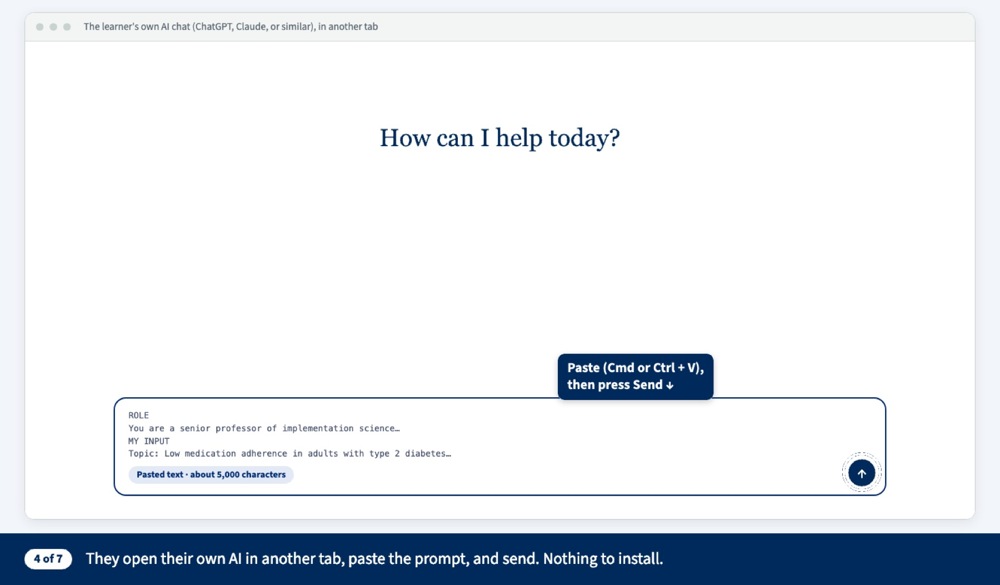
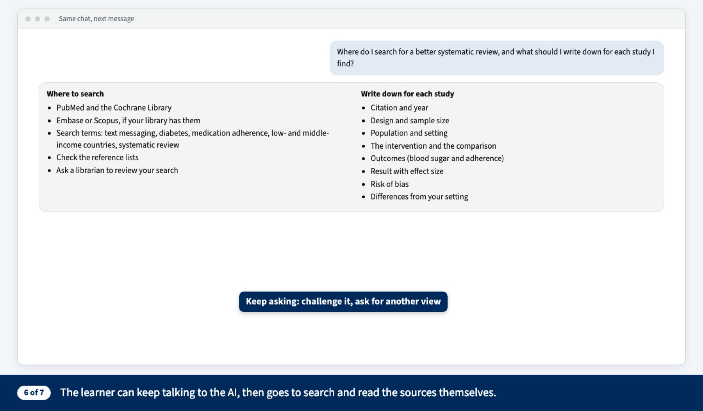
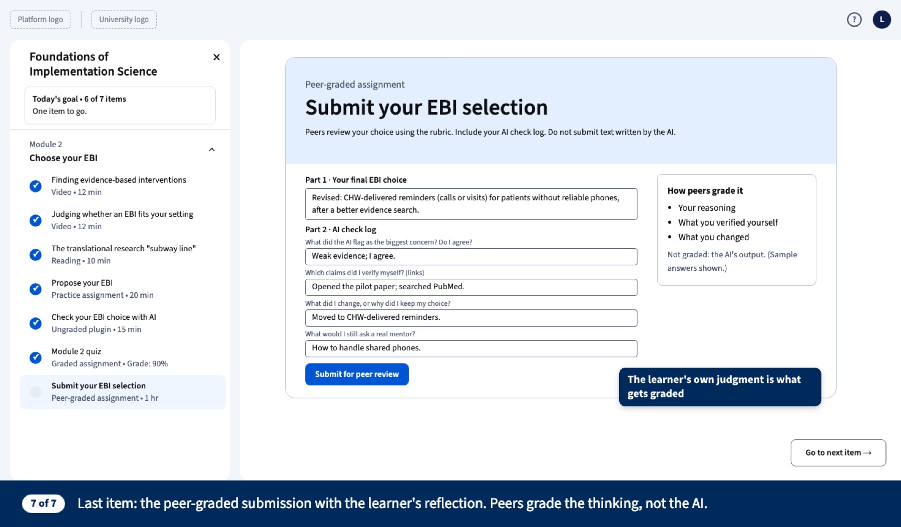

Dartmouth · Learning Design and Innovation · Capstone
From Canvas Classroom to Coursera
How do you give feedback when there is no instructor? I’m designing Module 2 of a self-paced Coursera course on implementation science, where learners propose an intervention, check it with AI, and get judged by peers, not the machine.
- Instructional design
- AI-supported feedback
- Live prototypes


The problem
A Canvas course built on live sessions and instructor grading has to work for thousands of self-paced learners with no instructor.
My focus
The first high-stakes decision: choosing an evidence-based intervention (EBI), where learners most need feedback.
The design
Worked examples, an AI reviewer that challenges first, and peer grading of the learner’s own reasoning.
4objectives
7step journey
2live prototypes
01The challenge
The Dartmouth course runs on Canvas for four weeks, with live Zoom sessions, paid textbooks and instructor grading. None of that works in a self-paced Coursera course with many learners. After benchmarking the Johns Hopkins Introduction to Implementation Science course on Coursera and reviewing research on online learning, three needs stood out.
Feedback without an instructor
MOOCs struggle to give feedback on complex, higher-order work (Bates, ch. 5).
Media built for online
Engagement drops after about 6 minutes of video (Guo, Kim & Rubin, 2014); choose the medium for the need (Bates, ch. 8).
Presence and structure
Learners need to feel the instructor and peers are there, and structure to manage their own learning (Community of Inquiry; UIS).
02Who it’s for
The online course will serve a broader, less prepared and less supported audience than the Canvas master’s cohort, so the design must explain more, show more examples and give feedback without an instructor.
Working health professionals and graduate students worldwide, aged about 25–55, at an intermediate level. Many study on a phone or a slow connection, outside US time zones, around jobs and families. They want to apply implementation science to a real problem at work (Watkins & Marsick, 2020).
How the audience shaped the design
| Audience fact | Design response |
|---|---|
| No instructor to catch mistakes | AI check, self-check lists, model answers |
| Some have no project topic | A worked sample project to follow |
| Mixed prior knowledge | Start-here lesson and plain definitions in M1 |
| Busy, global learners | Short items, free readings, captions, plain English |
| Different paces | Peer review only in M2, M6 and M8 |
Canvas cohort vs. online learners
Canvas facts come from the syllabus; the online column is an assumption to check.
| Canvas cohort | Online learners assumption | |
|---|---|---|
| Who | Master’s students in one program | Professionals, researchers, students, global |
| Prior knowledge | Shared baseline | From none to expert |
| Time | Fixed 4-week schedule | Around a job, start and stop |
| Support | Instructors, TA, live sessions | No instructor |
| Materials | Library and paid textbooks | Free and open only |
Four likely learner groups
Not yet confirmed by enrollment data. The logic model project serves both practitioners and researchers.
| Group | Wants | Needs |
|---|---|---|
| Health practitioners | Make a program work in their setting | Practical steps and tools |
| Researchers and grad students | Design studies, write grants | Frameworks and the logic model |
| Global health program staff | Adapt programs to low-resource settings | Non-US examples, free readings |
| Prospective degree students | Try the field before applying | A clear overview |
Misconceptions and barriers to design for
- “Any intervention that worked in one study is an EBI.” They may confuse an EBI, an implementation strategy and a guideline.
- “If the AI says it’s fine, it’s fine.” Or the opposite: “Using AI is cheating.”
- “Peer feedback isn’t real feedback.”
- Varying access to AI tools and different levels of digital literacy.
03What learners will do
By the end of Module 2, learners will be able to:
Propose
an evidence-based intervention for a health problem in their own setting, using a structured 8-part template.
Appraise
the evidence behind it: strength and quality, fit with their setting, and where it sits on the research-to-practice “subway line.”
Use AI critically
telling what the AI drew from their text, what is general knowledge, and what still needs checking, then checking it themselves.
Revise and justify
their EBI choice in writing, and give useful feedback on a peer’s reasoning.
Each objective is a skill a learner could put on a resume, following the “goals as skills” idea from the Johns Hopkins benchmark and competency-based education (Krauss, 2017).
04Design decisions
Collins & Kapur
Scaffold the hard decision
Worked examples model the task, the template breaks it into steps, the AI coaches, and a reflection log asks learners to explain and look back.
Rigolizzo · Kegan & Lahey
Make thinking safe to examine
The AI is told to “challenge first, then strengths,” pushing learners to question why they chose their EBI, and making growth the norm.
Deloitte 2026
Keep the human judgment
AI appears only in ungraded steps. Peers grade the learner’s own reasoning, never the AI’s output.
05The learner journey
Propose → Check with AI → Peer review, in seven steps. Each step uses one cognitive apprenticeship method. Click a step, or use the arrows.

Step 1 of 7
Module page
The two new items sit after the lessons and before the quiz and the peer-graded submission, so learners see the whole path first.
Cognitive apprenticeshipSequencing · global before local

Step 2 of 7
Propose your EBI
Eight numbered boxes, each with a worked example. Box 4 is where the learner names their EBI; all eight boxes feed the AI prompt.
Cognitive apprenticeshipScaffolding + modeling

Step 3 of 7
Check with AI
The page lists exactly what goes into the prompt and highlights the learner’s own words inside it. One click copies everything.
Cognitive apprenticeshipCoaching · made transparent

Step 4 of 7
Paste into their own AI
Learners open the AI tool they already use, paste the prompt and send. Nothing to install, no account to create.
Cognitive apprenticeshipCoaching
Step 5 of 7
The AI reviews like a professor
A verdict, scores on six criteria, “challenge first,” and claims to verify. Every point is tagged: from your text, general knowledge, or needs verification.
Cognitive apprenticeshipCoaching · a trigger for double-loop reflection (Rigolizzo 2012)

Step 6 of 7
Keep asking, then verify
The learner can push back or ask for another view, then goes to search and read the sources themselves.
Cognitive apprenticeshipExploration

Step 7 of 7
Peer-graded submission
A 4-question AI check log. Peers grade the learner’s reasoning, not the AI’s answer (Kegan & Lahey; Deloitte 2026).
Cognitive apprenticeshipArticulation + reflection
06Try the prototypes
Both run live. In the module overview, press “Show design rationale” to see the reading behind each choice. In the AI check, fill in the boxes and watch the reviewer prompt build itself.
Design rationale for the overview page, by section
| Section of the page | Design choice | Reading |
|---|---|---|
| Welcome video + transcript | Short and personal; the instructor tells a story about their own first mistake | COI teaching and emotional presence; Guo et al. 2014 |
| “Why this module matters” | Course why: the gap between evidence and practice | COI existential presence |
| Objectives | Verb-first skills, each tied to an item | Krauss 2017 (CBE) |
| Item list (Learn → Do → Show) | Videos cut to 5–6 min; peer discussion; no-AI option | Guo et al.; Bates ch. 8; Collins & Kapur; Gronseth (UDL) |
| How the pieces connect | Learner’s own project; AI never graded | Falbel; Watkins & Marsick; Deloitte 2026 |
| Plan your week | Plan before the task, look back afterwards | COI regulatory presence; Rigolizzo 2012 |
| Help + ways to learn panels | Captions, transcripts, text descriptions, low bandwidth, keyboard access | Instructure a11y (POUR); UIS |
Everything Module 2 includes
Module overview page
Purpose, objectives, time per item, a welcome video script and plan-your-week prompts.
Short videos, 6 min or less
“What counts as an EBI?” plus re-cut guest-talk clips, each with a framing question.
Static graphics
Three steps for finding EBIs, the subway-line diagram and a comparison table, with alt text.
“Propose your EBI” template
Eight numbered boxes, each with a worked example.
“Check with AI” tool
Builds the reviewer prompt from the learner’s answers and copies it to any AI.
Peer-graded submission
A 4-question reflection log, a rubric and calibration examples.
Plan-and-review prompts
“How will you find 3–5 articles?” before the task, “Did your plan work?” after.
07What’s next
Long term, this becomes the full 8-module Coursera course, built as one project chain from defining implementation science to the capstone logic model.